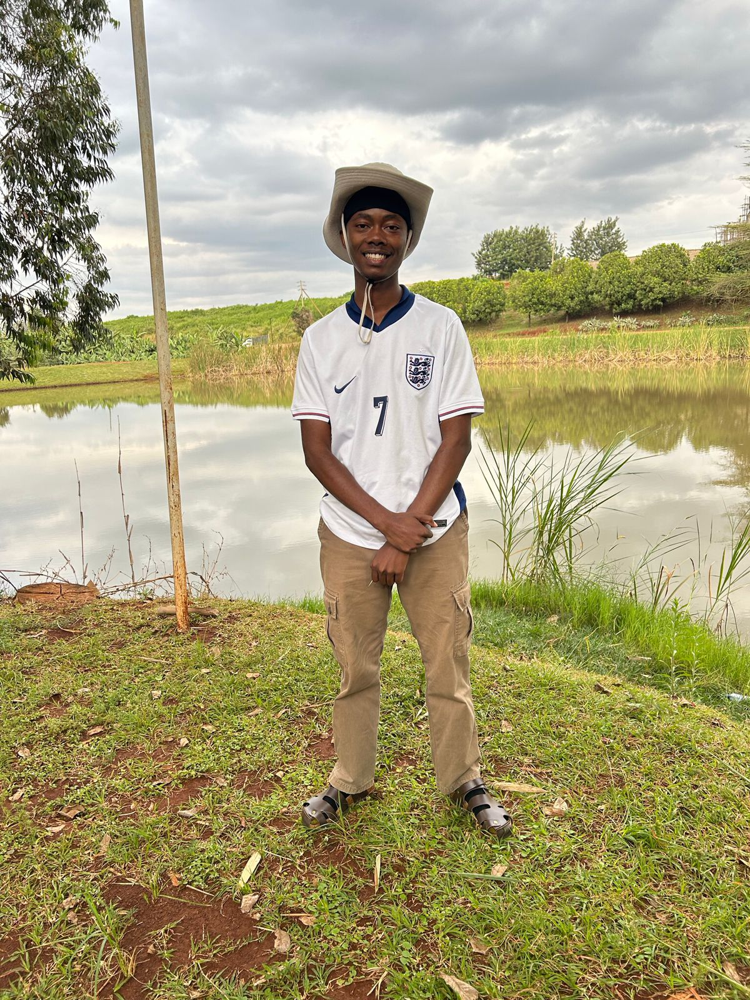
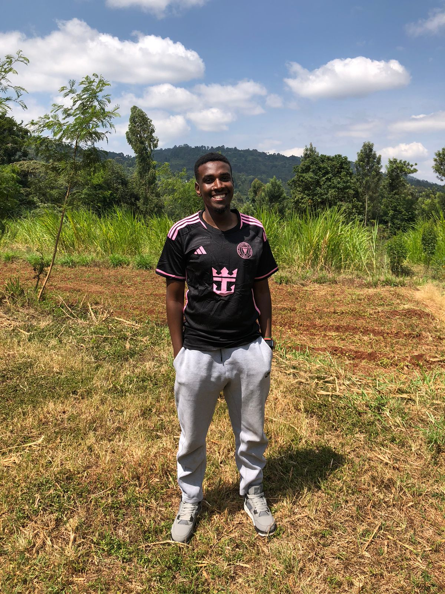

Our History
The Green Earth Initiative was founded in 2010 with the goal of protecting our planet's natural resources. Our journey began with local community cleanups and has grown into a global movement. Over the years, we have successfully implemented numerous conservation projects and engaged thousands of volunteers.
Our Mission
Our mission is to create a sustainable future by actively promoting environmental conservation. We focus on restoring natural habitats, reducing pollution, and educating communities about the importance of environmental stewardship.
Meet the Team
| photo | Name | Position | Bio |
|---|---|---|---|
|  | Beckham wambua | Executive Director | Beckham has over 20 years of experience in environmental conservation and leads the organization’s strategic initiatives. |
| joseph musau | Project Manager | joseph coordinates various conservation projects and ensures that all activities align with our mission. | 
Our Partners
We are proud to collaborate with numerous organizations and corporations that share our commitment to environmental conservation. Some of our key partners include: